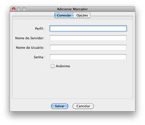
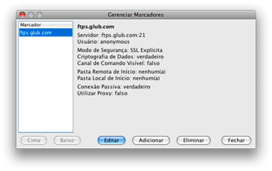

Marcadores
À medida que estabelece conexões, pode criar marcadores de modo a poder
voltar rapidamente a elas.
Adicionando Marcadores

Há três formas de adicionar marcadores aos seus sítios de FTP favoritos.
- Adicionar a partir do Diálogo de Abertura de Conexão.
- Adicionar a partir do Item de Adição de Marcadores no Menu de
Marcadores.
- Adicionar a partir do item Gerenciar
Marcadores do menu Marcadores.
Se sabe que vai querer salvar um marcador após entrar no sistema
"logging in", a maneira mais fácil é selecionar a opção Salvar em
Marcadores no diálogo de Abertura de Conexão. Depois de se conectar,
será gravado um marcador para esse sítio. Por defeito o nome de perfil
será idêntico ao nome do servidor (sistema hospedeiro ou "host"). Poderá
modificá-lo mais tarde editando as propriedades dos marcadores no
diálogo Gerenciar Marcadores.
Se já entrou no sistema ou deseja adicionar um marcador sem entrar no
sistema, pode fazê-lo no menu Marcadores selecionando o item
Adicionar Marcador. Aqui ser-lhe-á permitido salvar toda a
informação pertinente.
Gerenciando Marcadores

Uma vez gravado um marcador, terá a opção de editar a informação gravada
a partir do diálogo Gerenciar Marcadores. Poderá aceder a este diálogo indo
ao menu Marcadores e selecionando o item Gerenciar Marcadores. Aqui
terá a opção de organizar a localização dos marcadores no menu, editar
os atributos do marcador, adicionar novo marcador, ou apagar tudo.
Marcadores Globais
Há um tipo de Marcador que poderá usar, mas não editar. São chamados
marcadores globais. Estes marcadores globais não são diferentes da sua
cópia local, mas são recuperados através de um URL HTTP que pode ser
definido nas preferências. O URL deveria apontar para um arquivo
marcador XML válido do Secure FTP 2.5.